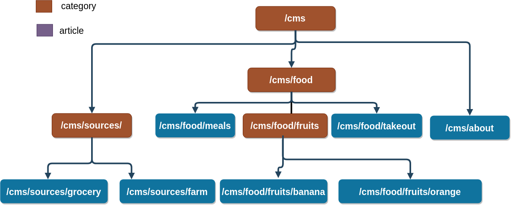
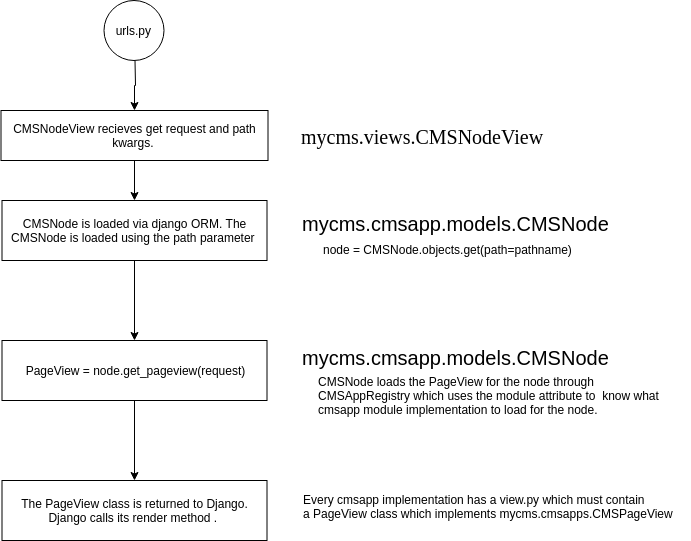

CMSApps Internals¶
CMSApps automate a lot of the grind work when building a tree hierarchy based website.
What is CMSApps trying to solve:
Provide an easy way of building the tree of pages that makes up a website..
Automate the creation of each branch/leaf.
Creating new webpages should be easy. It should be as simple as creating a class to provide the values for the templates and then providing the templates
The static assets and tempaltes should be kept together within the cmsapp module.
The way CMSApps work makes it very easy to create new type of cms pages. However it is also very opinionated. A page for example supports only a GET. All interactions with the models must be done via DRF by implementing a ViewSet. All API endpoints are viewsets. This is my personal preference. I want to have all the static and templates that is specific to a particular page tyhpes.
A CMSApp module implements a certain type of page. For example the category cmssapp is designed to retrieve all article nodes below it and provide them to its template so that it can iterate and display them. It provides methods to also create child nodes.
The Structure of a MyCMS Website¶
Just like any website, a MYCMS website is a tree of webpages. MyCMS achieves this by implementing a CMSNode which keeps track of the path of the Node and its parents and also its children.
{kind=link}
The above shows web pages as nodes. The Root node is a category node. Within mycms it is referenced by the CMSNode model. Each child node has a foreign key to it and it has access to all child nodes.
The CMSNode provides contains an attribute that tell it what type of CMSApp it should use to render the page. It knows what type of cmsapp because it contains a ForeignKey to eh CMSAppRegistry.
Each cmsapp in the node provides a rest api to create a child node.
From request to django view to a cmsapp view¶
the call sequence can be summarized as follows:
{kind=link}
1. request is routed in the normal django way via urls.py via
url(r'^(?P<path>[-/\.a-z\d_]*)/$', CMSNodeView.as_view(), name="cmsnode")
The CMSNodeView uses the path parameter to query the CMSNode table to directly load the CMSNode.
The following node snippet is enough to load a cmsapp to render its html:
node = CMSNode.objects.get(path=pathname,)
return node.render(request)
Note
The magic starts to happen when we call Node.render. Dynamic import is used to load the cmsapp Controller class through the use of CMSAppRegistry and hands off processing ot it.
CMSNode uses CMSAppRegister to get the details about the cmsapp for it. CMSAppRegister provides various methods such as:
finding templates
finding staticfile
get a list of all cmsapps
load a cmsapp module. (dynamically import the module)
Note
The CMSNode provides initializing a CMSPageData and various tasks to populate the CMSPageData. The CMSPageData is like a Context that contains information to be used by the template.
The least task needed to implement a new cmsapp is to implement the CMSPageData.
What is a CMSApp?¶
A CMSApp is like a django app that implements a webpage. For example the category CMSapp provides data for its template such that the template can display the different child categories and child articles under it.
A CMSApp Skeleton.¶
Dynamic Loading of CMSApp¶
CMSAppRegistry¶
-
class
mycms.models.CMSAppRegistry(*args, **kwargs)[source]¶ A database table that stores the information about the different cmsapps. It also provides helper methods to easily get data from the registered cmsapps.
- Parameters
id (AutoField) – ID
name (CharField) – Identifier for the cmsapp. By convention its the module name.
module_name (CharField) – The module name for the cmsapp.
display_name (CharField) – Pretty name to display in lists and admin interfaces.
-
classmethod
CMSAppRegistry.get_cmsapp_dirs(cls)[source]¶ Returns a list of directories where the cmsapps reside. It gets the list of cmsapp module names and instantiates them so that we can find the path where they reside and returns that as a list of directories
CMSNode¶
-
class
mycms.models.CMSNode(*args, **kwargs)[source]¶ The CMSNode is a database table stores that attributes about any node within mycms. Every entry within MYCMS is a node. (Just like inodes in a filesystem.)
cmsapp = CMSAppRegistry.objects.get(name=”category”) cmsnode = CMSNode.objects.get_or_create(path=”/cmsapp”, cmsapp=cmsapp)
- Parameters
id (AutoField) – ID
path (CharField) – Path to the node. example: /cms/category/file
parent_id (ForeignKey) – A foreinkey to the parent path.
cmsapp_id (ForeignKey) – Foreignkey to the cmsapp
-
exception
DoesNotExist¶
-
exception
MultipleObjectsReturned¶